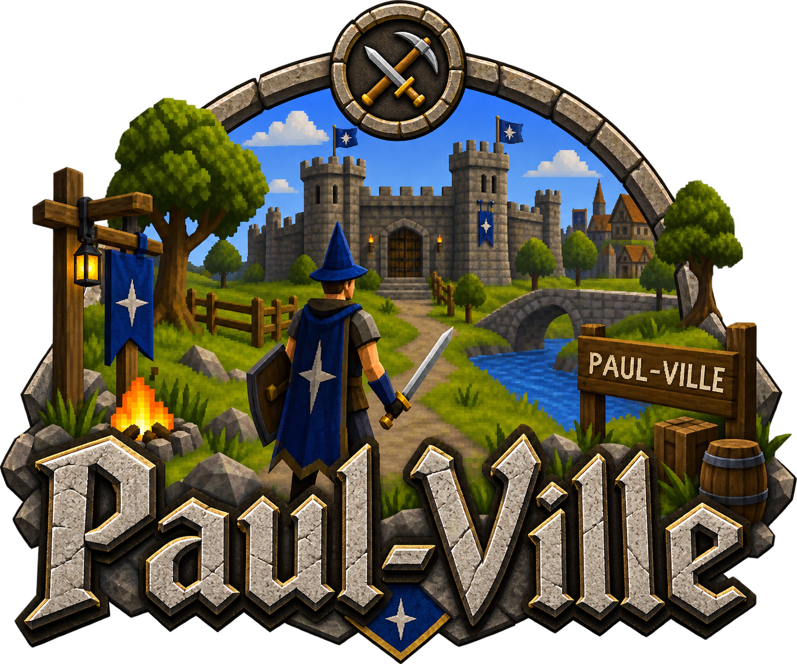

A community-run 2009scape server and tracker.
Server details
- World: Paul-Ville
- Type: 2009scape private server
- Hosted by: Shalkith
- Discord: Join the Paul-Ville Discord
How to join
Read the getting started guide to download the launcher and connect to Paul-Ville. The server management address is shared privately in Discord.
Tracker
This site tracks player experience gains, hiscores, and world activities from the Paul-Ville server. Data updates daily.